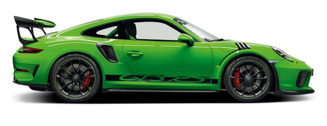
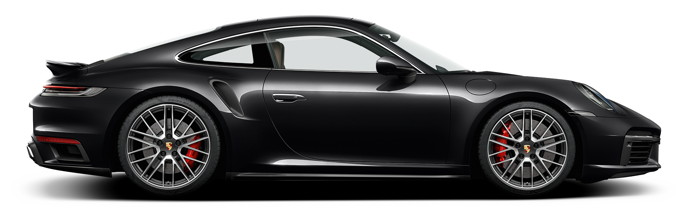
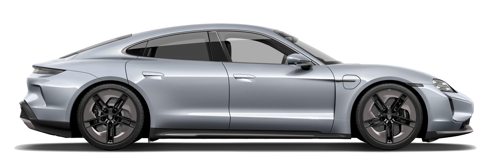
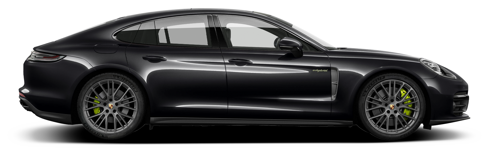
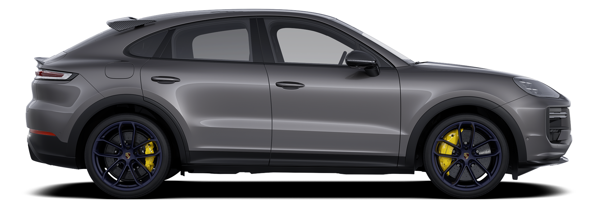

MODELOS
SPORT
GT3 RS
Saiba MaisExplore a emoção incomparável do Porsche GT3 RS, GTS e GT4, três ícones do mundo automotivo. Com design arrojado e tecnologia avançada, oferecem desempenho excepcional e uma experiência de direção única. O GT3 RS, com sua história lendária, representa a essência pura do esportivo, enquanto o GTS impressiona com sua elegância e potência. Descubra o prazer de dirigir um Porsche, onde cada curva se torna uma aventura emocionante. Eleve sua paixão por carros esportivos com o GT3 RS, GTS e GT4 da Porsche.
COUPÉ
911 Turbo
Explore a elegância e o desempenho dos modelos coupé da Porsche, incluindo o icônico 911 Carrera e o poderoso 718 Cayman. Cada um desses exemplares combina design sofisticado com tecnologia de ponta, proporcionando uma experiência de direção inigualável. Com sua aerodinâmica impressionante e motores potentes, os modelos coupé da Porsche oferecem uma mistura única de luxo e esportividade. Prepare-se para ser cativado pela excelência e pela paixão pela condução em cada curva. Descubra a arte de dirigir um coupé Porsche e eleve sua experiência automotiva a novas alturas.
ELETRICO
Tycan Turbo S
Explore a inovação e o futuro dos modelos elétricos da Porsche, como o impressionante Taycan e o Taycan Cross Turismo. Esses exemplares combinam design vanguardista com desempenho elétrico de ponta, oferecendo uma experiência de direção emocionante e sustentável. Com tecnologia de última geração e autonomia líder na categoria, os modelos elétricos da Porsche estão redefinindo os padrões de mobilidade elétrica. Prepare-se para uma jornada emocionante rumo a um futuro mais limpo e dinâmico com os carros elétricos da Porsche. Experimente o poder e a sofisticação dos modelos elétricos e descubra uma nova forma de conduzir.
SEDAN
Explore o luxo e o desempenho dos modelos sedã da Porsche, com destaque especial para a elegante Panamera. Combinando conforto refinado e potência impressionante, a Panamera oferece uma experiência de condução única, perfeita para quem busca sofisticação e desempenho. Seja seduzido pelo design aerodinâmico e pelos recursos de alta tecnologia que elevam o conforto e a conveniência a um novo patamar. Prepare-se para uma viagem extraordinária onde o luxo encontra a performance, definindo novos padrões de excelência em veículos de luxo e sedãs esportivos. Experimente o equilíbrio perfeito entre elegância e dinamismo com a Porsche Panamera.
SUV
Cayenne Turbo GT
Descubra a versatilidade e o luxo dos SUVs da Porsche, incluindo o poderoso Cayenne e o elegante Macan. Estes veículos combinam o desempenho esportivo característico da Porsche com a praticidade e conforto de um SUV de luxo. Com designs distintos e tecnologia de ponta, os SUVs da Porsche oferecem uma experiência de condução incomparável, seja nas estradas urbanas ou nos terrenos mais desafiadores. Prepare-se para explorar novos horizontes com estilo, potência e sofisticação. Experimente o melhor dos dois mundos com os SUVs da Porsche: desempenho emocionante e conforto refinado, projetados para a sua próxima aventura.